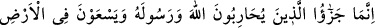
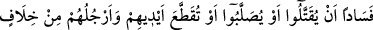
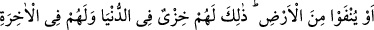
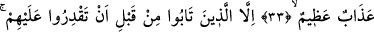
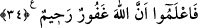

ALLAH VE RASÛLÜ İLE
SAVAŞANLARIN CEZASI
33- Allah ve Rasûlü’ne karşı savaşanların ve yeryüzünde fesat çıkarmaya
çalışanların cezâsı ancak ya öldürülmeleri, ya asılmaları, yâhut el ve ayaklarının
çaprazlama kesilmesi, yahut da bulundukları yerden sürülmeleridir. Bu onların
dünyâdaki rüsvaylığıdır. Onlar için âhirette de büyük azap vardır.
34- Ancak, siz kendilerini yenip ele geçirmeden önce tevbe edenler müstesna;
biliniz ki Allah çok bağışlayıcı ve esirgeyicidir.
“Allah ve Rasûlü’ne karşı savaşanların” yani, onların dostları olan müslümanlarla
savaşanlar, demektir. Müslümanların şânını yüceltmek için onlarla savaşmak, Allah ve
Rasûlü ile savaşmak gibi sayılmıştır. Onlarla savaşmaktan maksat, yol kesmektir. Bu da
güç ve kuvvet sahibi, kendilerini yakalamak isteyenlere karşı koyabilen kişilerin çölde
veya kırda toplanıp müslümanların kanlarına, mallarına, karılarına ve cariyelerine
saldırmalarıdır.
“Ve yeryüzünde fesat çıkarmaya çalışanların cezâsı” Bu âyet, Hilal b. Uveymir el-
Eslemî’nin kavmi hakkında inmiştir. Rasûlullah (s.a.v.) Hilal ile lehte ve aleyhte
yardımlaşmamak üzere sulh yaptı. Ona giden bir müslüman ve Rasûlullah (s.a.v)’e
gelen Hilal’in kavminden bir kimse emin olacak ve ona karşı bir hareket
yapılmayacaktı. Aynı zamanda Hilal’in himâyesinde, Rasûlullah (s.a.v.)’e giden de
korunacaktı. Kinâneoğulları’ndan müslüman olmak isteyen bir grup insan, Hilal’in
kavminden bâzı insanlara rastladı. O gün Hilâl orada yoktu. Bu yüzden yollarını kesip
onları öldürdüler ve mallarını da aldılar.
Eğer “Sâdece müslüman olmak isteyen kimse harbî (gayri müslim ülke vatandaşı)
olmaktan çıkmaz ve o kimseye eman verilmiş de olsa yolunu kesene had cezâsı
gerekmez.” dersen, ben de şunu derim: Bunun mânâsı, onların gerçekte müslüman olup
da İslâm ahkâmını öğrenmek isteyen bir gurup olmalarıdır. Yâhut onlar müslüman olma
kastıyla gelen ehl-i zimmet mevkiindedirler. Ehl-i zimmetin yolunu kesmek ile işlenen
suç da haddi gerektirir. Savaş ve bozgunculuk, farklı mertebe ve değişik şekillerde